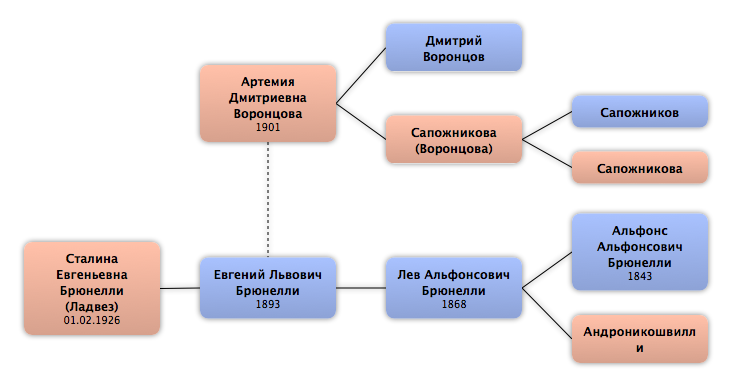

Домой
Домой
 Люди
Люди
 Семьи
Семьи
 Источники
Источники
 Диаграммы
Диаграммы
 Статистика
Статистика
Артемия Дмитриевна Воронцова

Контекст

Родители
| Отец | Дата рождения | Мать | Дата рождения |
|---|---|---|---|
 Дмитрий Воронцов Дмитрий Воронцов
|
Сапожникова
|
Родители и дети
| Партнёры | Дата рождения | Дети |
|---|---|---|
|
Евгений Львович Брюнелли
|
1893 |
Сталина Евгеньевна Брюнелли
|
События
Факты
Медиа
Примечание
Источники
Родство
| Имя | Степень родства | Дата рождения | Место рождения | Дата смерти | Место смерти |
|---|---|---|---|---|---|
| Партнёров | |||||
| Партнёр или муж | 1893 | 10.06.1938 | Ростовская область, СССР | ||
| Братья и сёстры | |||||
| Сестра | |||||
| Дети | |||||
| Дочь | 01.02.1926 | Ленинград, СССР | 06.10.1997 | Санкт-Петербург, Россия | |
| Родителей | |||||
| Отец | |||||
| Мать | |||||
| Правнуки | |||||
| Правнук | 01.09.1988 | Ленинград, СССР | |||
| Правнук | 19.11.1991 | Санкт-Петербург, Россия | |||
| Правнук | 15.07.1995 | Санкт-Петербург, Россия | |||
| Дедушки и бабушки | |||||
| Дедушка | |||||
| Бабушка | |||||
| Жёны сыновей (мужья дочерей) | |||||
| Зять | 22.08.1926 | Хабаровск, СССР | 08.05.2006 | Санкт-Петербург, Россия | |
| Племянники и племянницы | |||||
| Племянник | |||||
| Внучатые племянники и внучатые племянницы | |||||
| Внучатая племянница | |||||
| Правнучатые племянники и правнучатые племянницы | |||||
| Правнучатая племянница | |||||
| Тёти и дяди | |||||
| Тётя | 1942 | ||||
| Тётя | |||||
| Двоюродные братья и сёстры | |||||
| Двоюродная сестра | |||||
| Двоюродная сестра | 20.01.1901 | ||||
| Двоюродные племянники (племянницы) | |||||
| Двоюродный племянник | |||||
| Двоюродный племянник | |||||
| Двоюродный племянник | |||||
| Двоюродные внучатые племянники (племянницы) | |||||
| Внучатая племянница | 1.02.1953 | ||||
| Внучатый племянник | 10.10.1959 | Ленинград, СССР | |||
| Двоюродные правнучатые племянники (племянницы) | |||||
| Правнучатая племянница | 27.01.1979 | Санкт-Петербург, СССР | |||
| Правнучатая племянница | 1983 | Ленинград, СССР | |||
| Правнучатая племянница | 23.05.1987 | Санкт-Петербург, СССР | |||
| Правнучатый племянник | 1988 | Ленинград, СССР | |||
| Внуки | |||||
| Внучка | 19.03.1963 | Ленинград, СССР | |||
| Внук | 22.02.1965 | Ленинград, СССР | |||
| Внучатая сноха | 17.05.1968 | Ленинград, СССР | |||
| Внучатая сноха | 11.02.1974 | Ленинград, СССР | |||